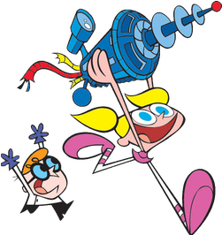
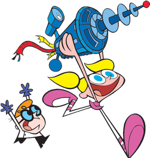
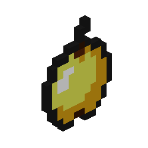
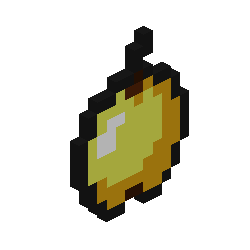
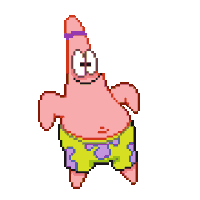
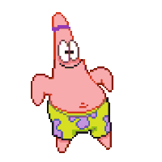

The longest running animated comedy series ever made, as well as one of the most popular. The Simpsons is just as popular today as it was in 1990.
Although it ran for a single year and is not well known now, Disney's Talespin was a hit in its second year on air.
The classic Warner Bros cartoon series for Batman was extremely popular in 1992, and continued on to become one of the world's most popular superhero franchises in the world.
Despite having a total of only 98 episodes and runnning for two years, Tiny Toon Adventures was an extremely popular spinoff of Warner Brother's "Looney Tunes" that was a classic in 1993.
Broadcasted by MTV, Beavis & Butthead ran from 1993 - 1997, reaching peak popularity in it's second year on air.
Rugrats was Nickelodeon's longest running animated series, on air from 1994 until 2012. In 1995, it was the most popular cartoon in North America.
Dragon Ball Z, adapted from the final 324 chapters of the manga series, premiered in Japan in 1989, reaching almost 300 episodes before it ended in 1996.
With 78 episodes, 4 seasons and a running time of 7 years, Dexter's Laboratory was the top cartoon series in 1997.
This classic cartoon series ran for 5 seasons, concluding in 2004. The show was popular for a wide audience, as many found it relatable.
SpongeBob launched in 1999, and has remained the number-one kids' animated series on TV for over two decades. The comedy has developed a global fanbase and became a household name very quickly.
Pokémon has run in many variations over the years since it's debut in 1997, with over one thousand episodes, but was a global hit in 2000.
The PowerPuff Girls originally aired in 1998, becoming extremely popular in 2001 and contributing to the popular "y2k" aesthetic that continues to resurface even today.
This cartoon series ran from 2001 and ended as recently as 2016. With 10 seasons, the show continued to be a hit for the entirety of its run.
Kim Possible began and was at its most popular in 2002, with many becoming hooked on the show because of its theme song. It ran for 4 seasons and was rebooted for a live action spinoff in 2019.
Family Guy, like The Simpsons, was marketed as an adult animated sitcom. The show began in 1999 and ran for only two seasons, but is still very popular even now, as it was the most popular animated series in 2004.
This extremely popular series ran from 2005-2008 and became a cult classic almost immediately. It is currently also beind adapted into a live action series.


 


 


 
